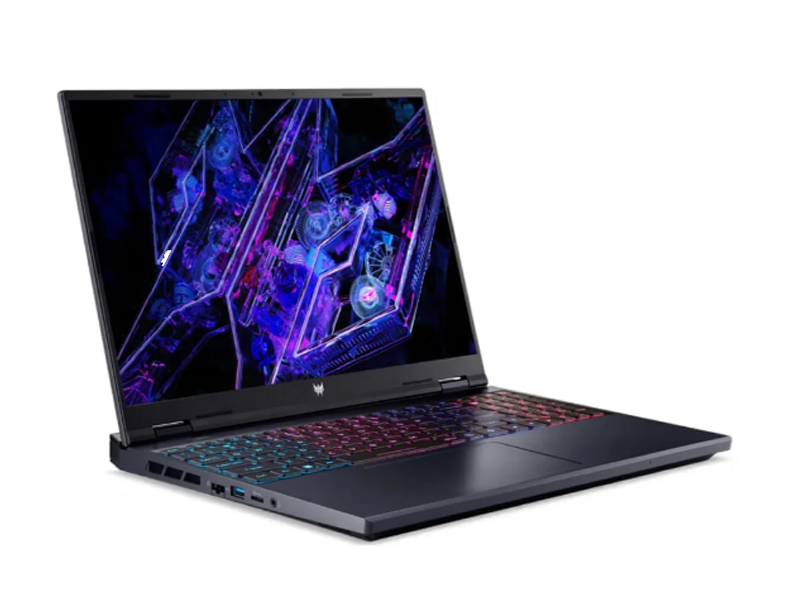
Notebook gamer Acer Predator Helios Neo 16 (modelo PHN16-72-75TX): processador Intel Core i7-14700HX, 32GB de RAM, SSD de 512GB, placa de vídeo RTX 4070 e tela de 16''. É a máquina que roda o software de produção ao vivo (vMix ou OBS): o i7 de muitos núcleos processa vários sinais ao mesmo tempo, os 32GB seguram câmeras, gráficos e gravação juntos, e a RTX 4070 usa o encoder de hardware (NVENC) pra comprimir o vídeo da transmissão sem pesar no processador. Versão enxuta e portátil: uma máquina só no lugar dos dois servidores fixos, mais fácil de transportar e montar. Observação: o SSD de 512GB é justo pra gravação em alta resolução, vale prever um SSD externo. Preço: R$ 9.719 à vista (PIX) ou R$ 10.799 a prazo (Kabum, jun/2026).
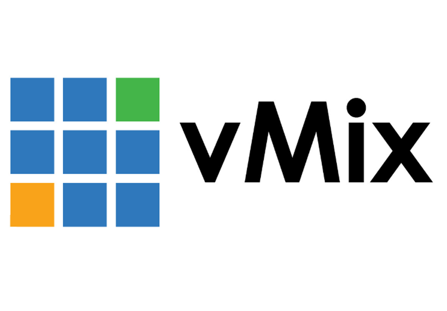
Licença do vMix edição 4K: o software de produção ao vivo que roda no notebook. Captura as câmeras (por NDI/SDI/HDMI), faz o corte e a mixagem do programa, monta o multiview, insere legendas e gráficos, grava e transmite (YouTube etc.). A edição 4K trabalha em até 4K e libera mais entradas, instant replay e saída em alta resolução. Licença perpétua, paga uma vez. Preço: US$ 700 ≈ R$ 3.605 (convertido a ~R$ 5,15/US$, jun/2026).
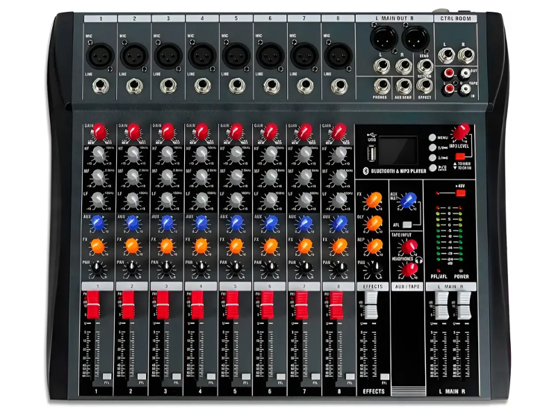
Mesa de som analógica Yamaha MG12XU de 12 canais, com 6 pré-amplificadores de microfone D-PRE (PAD e phantom +48V), compressor de um botão por canal, processador de efeitos SPX embutido e interface USB (grava e reproduz em 24-bit, com Cubase AI incluso). É onde o operador equilibra os volumes das fontes (os microfones sem fio, players e retornos), aplica efeitos e monta a mixagem que vai ao ar. Os 6 canais de microfone cobrem os 4 microfones do set com folga. Preço: ~R$ 2.810 (mercado, jun/2026).
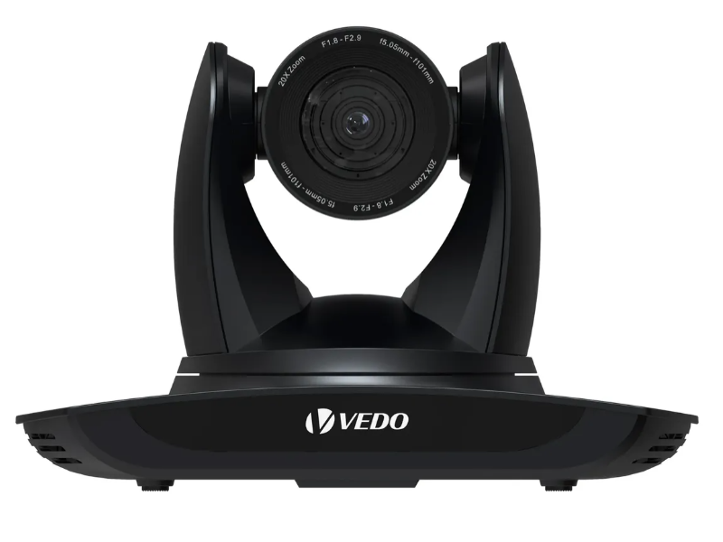
Câmera robótica PTZ (pan, tilt e zoom) 4K com zoom óptico 20x, rastreamento automático por IA que mantém o apresentador enquadrado e saída por NDI (vídeo de baixa latência pela rede), além de HDMI/SDI/USB conforme o modelo. Marca VEDO, voltada a igrejas, aulas e transmissões ao vivo. Três unidades cobrem os ângulos principais do set (frontal, lateral e geral), controladas à distância sem operador segurando a câmera. Preço: R$ 2.481,60 por unidade (× 3 ≈ R$ 7.445, jun/2026).
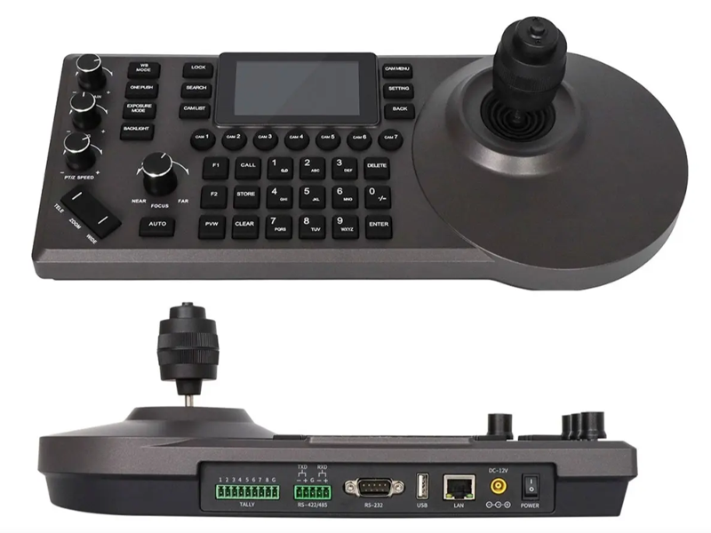
Controladora PTZ HCST: teclado com joystick 3D e monitor embutido de 3'' (HDMI) pra operar as câmeras PTZ ao vivo, comandando pan, tilt e zoom e saltando entre posições pré-gravadas, com preview da imagem na telinha. Compatível com os protocolos PTZ comuns (VISCA / ONVIF) por IP ou serial. Opera as 3 câmeras VEDO de forma fluida, sem depender só do software de produção. Preço: R$ 2.195 (mercado jun/2026).
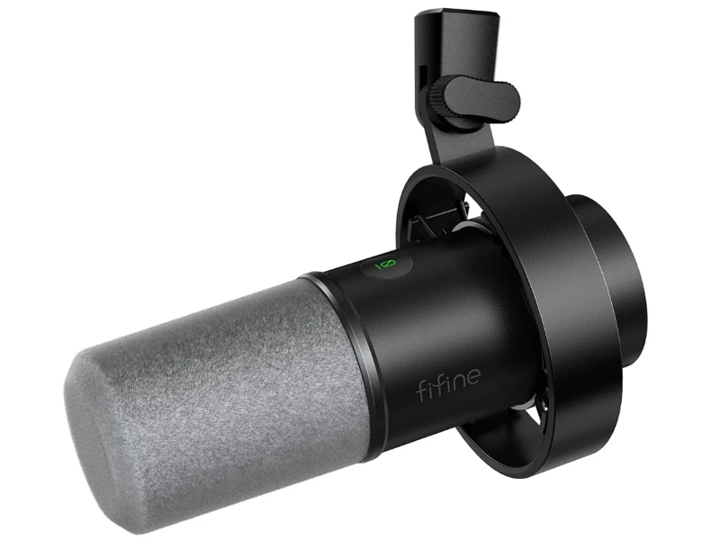
Microfone dinâmico cardioide com cabo (conexão XLR balanceada), feito pra podcast e streaming, acompanha suporte de mesa. Por ser dinâmico e cardioide, foca na voz e rejeita boa parte do ruído da sala. A conexão XLR entra direto nos canais de microfone da MG12XU, um por apresentador. Seis unidades cobrem as 6 posições do set, uma por pré-amp de microfone da MG12XU (que tem exatamente 6, ou seja, fica no limite, sem canal de mic sobrando pra adicionar outro microfone depois). É um modelo de entrada (mais simples que um Shure SM7B ou Rode Procaster). Preço: R$ 599,99 por unidade (× 6 ≈ R$ 3.600, jun/2026).
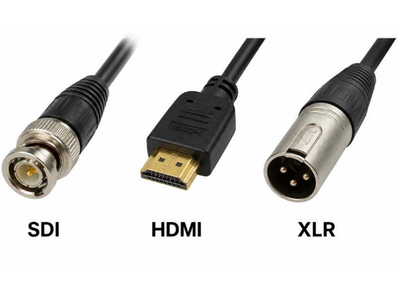
Conjunto de cabos e conectores que interliga todos os equipamentos: SDI (vídeo profissional por conector BNC), HDMI (vídeo e áudio digital entre câmeras, telas e computador) e XLR (áudio balanceado de microfones e mesa, resistente a ruído), mais adaptadores. É a espinha dorsal invisível do estúdio: sem o cabeamento bem dimensionado, câmeras, mesa, computador e telas não conversam entre si.
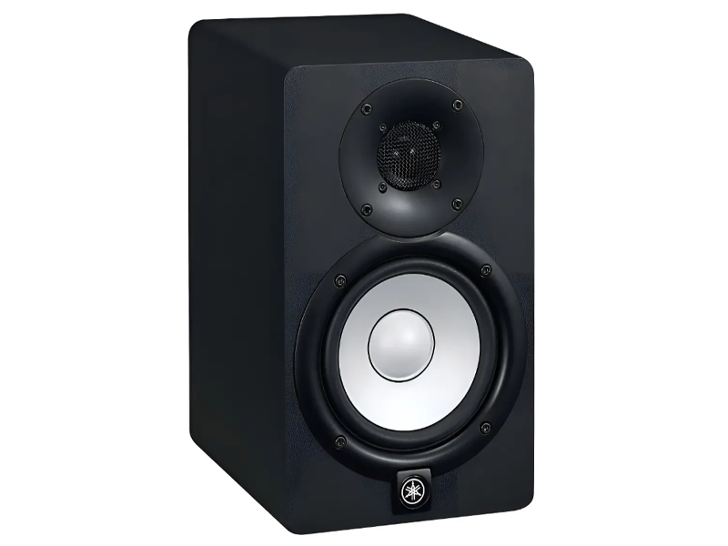
Monitor de referência ativo Yamaha HS8: caixa bi-amplificada (120W) com woofer de 8'' e tweeter de 1'', bass reflex, amplificação própria e entradas balanceadas XLR/TRS. Serve pra equipe ouvir com fidelidade exatamente o som que está sendo captado e transmitido, detectando problemas (distorção, ruído, desequilíbrio) antes que cheguem ao público. Preço: R$ 2.988 (1 unidade, mercado jun/2026).
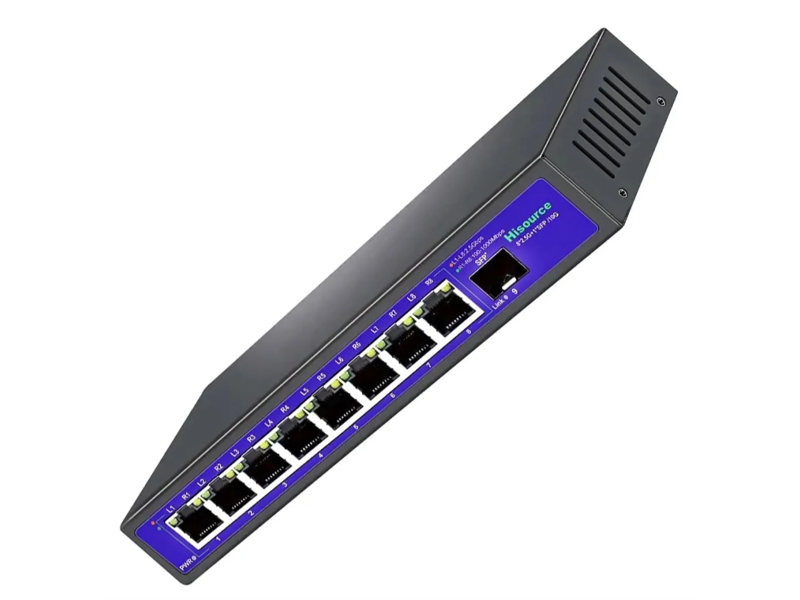
Roteador/gateway TP-Link Omada ER706W: WiFi 6 dual-band AX3000, 6 portas Gigabit, multi-WAN com load balance (junta e equilibra os 2 links de internet pra mais banda e redundância) e VPN (IPSec, WireGuard, SSL). Distribui a internet, conecta câmeras, computador e controladora, e prioriza o tráfego da transmissão (QoS) pra manter o ao vivo estável, com firewall e defesa contra ataques. O WiFi embutido dispensa um access point à parte. Preço: R$ 1.697 (mercado jun/2026).
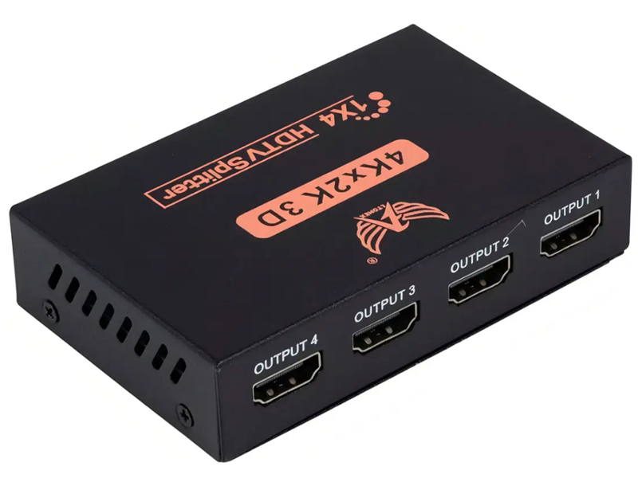
Distribuidor (splitter) HDMI ativo 1x4, modelo F3 JC-SPHMI: recebe uma entrada HDMI e replica a mesma imagem, idêntica e ao mesmo tempo, em 4 saídas, amplificando o sinal. Serve pra mandar a mesma imagem pra vários destinos de uma vez (monitor do operador, gravador, TV de retorno). É um modelo de entrada (~6,75 Gbps), suporta 4K mas costuma trabalhar a 4K@30Hz / Full HD a 60Hz; pra produção em 4K a 60Hz, precisaria de um splitter HDMI 2.0 18Gbps. Preço: R$ 62,75 (mercado jun/2026).
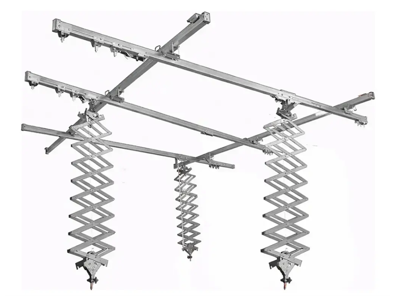
Sistema de sustentação das luzes preso no teto: 5 trilhos fixos mais 3 pantógrafos (braços articulados tipo sanfona que sobem e descem). Os pantógrafos seguram os iluminadores com acessórios e deslizam pelos trilhos pra reposicionar. A função é tirar tripés e cabos do chão: as luzes ficam penduradas, descem na altura exata e liberam o piso, dando agilidade pra mudar a luz entre cenas.
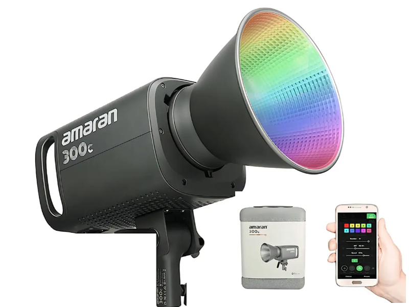
Iluminador LED do tipo COB (fonte pontual concentrada) de 300W com tecnologia RGBWW: faz tanto branco regulável (2.500K a 7.500K) quanto cores cheias, com fidelidade alta (CRI 95+) e controle pelo app. Tem encaixe padrão Bowens, que aceita praticamente qualquer acessório de luz. É a luz de força do estúdio (principal ou de recorte); o Bowens permite plugar softbox, balão ou grade pra moldar o feixe conforme a cena.
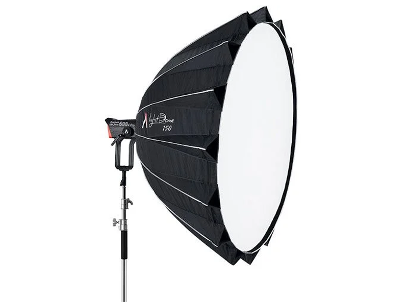
Softbox parabólico Aputure Light Dome III com encaixe Bowens, acompanha telas difusoras e grade colmeia (grid). A grade controla o espalhamento e evita luz vazando pros lados. É a luz principal "macia" do apresentador: gera uma luz suave e modelada, e a colmeia concentra o feixe só onde se quer, sem estourar o fundo.
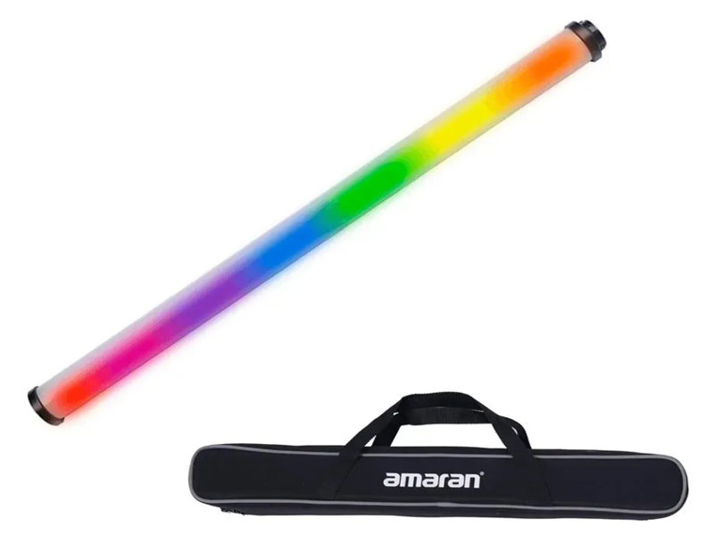
Luz em formato de bastão/ribalta (tube light) Amaran T2c RGBWW: faz branco regulável e cores cheias com fidelidade alta, controle pelo app via Bluetooth e por DMX, além de efeitos prontos (fogo, TV, polícia, raios). É a luz de cenário/acento: vai no fundo, nas laterais ou enquadrada no plano pra dar cor, profundidade e clima. Preço: R$ 2.119,58 por unidade (× 2 = R$ 4.239,16, jun/2026).
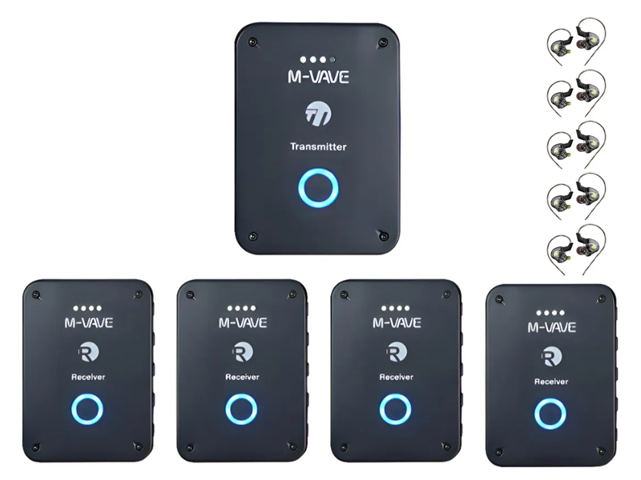
Kit de retorno in-ear sem fio M-Vave WP-9 com 1 transmissor e 4 receptores recarregáveis (clip-on), em 2.4GHz, áudio digital e latência baixíssima. O transmissor manda o mesmo sinal pros 4 receptores ao mesmo tempo, um por apresentador. A função é dar o retorno no ouvido sem cabo: cada um escuta a si mesmo, a equipe ou a trilha em tempo real e se movimenta livre pelo set. Preço: R$ 552,92 (kit, jun/2026).
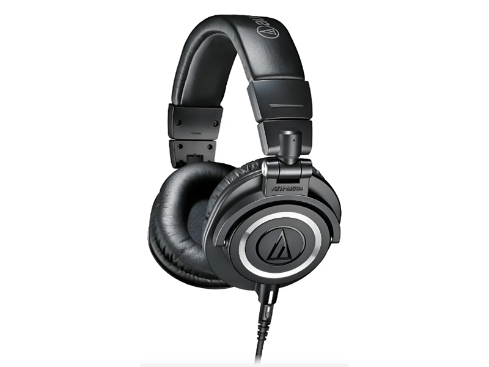
Fone over-ear (envolve a orelha) fechado, de referência pra estúdio, com drivers de 45mm e bom isolamento passivo. É um padrão de mercado pra monitoração de áudio. Serve pra equipe de áudio e operadores ouvirem com precisão o que está sendo captado e transmitido: por ser fechado, isola o ruído do ambiente e não deixa o som vazar pros microfones. Preço: R$ 1.327,90 por unidade (× 2 = R$ 2.655,80, jun/2026).